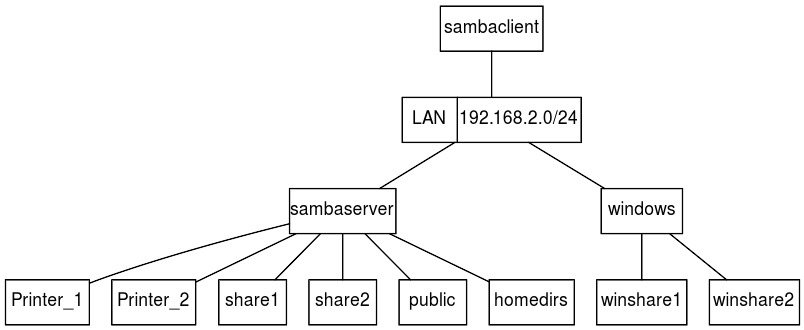
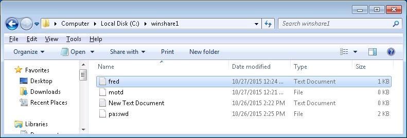
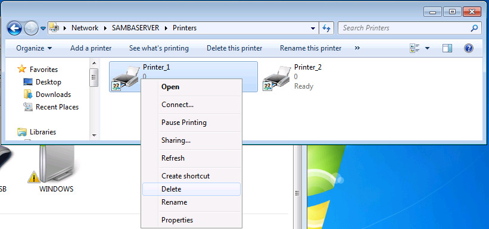
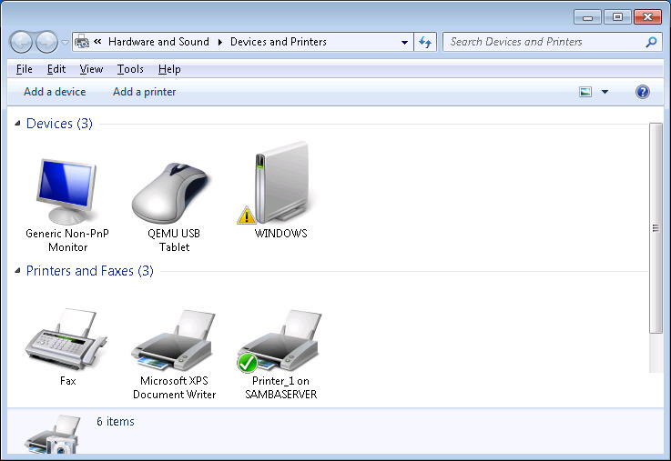

SAMBA Server Configuration (209.1)
SAMBA Server Configuration (209.1)¶
Objective 209.1; Configuring a Samba Server (5 points)¶
- Candidates should be able to set up a SAMBA server for various clients. This objective includes setting up Samba as a standalone and a member server to a Windows Active Directory domain. Both setups should be configured to share directories and printers to the clients.
Key Knowledge Areas¶
-
Samba 4 documentation
-
Samba configuration files
-
Samba tools and utilities
-
Mounting Samba shares on Linux
-
Samba daemons
-
Mapping Windows usernames to Linux usernames
-
User-Level and Share-Level security
Terms and Utilities¶
-
smbd, nmbd -
smbstatus, testparm, smbpasswd, nmblookup -
smbclient -
samba-tool -
net -
/etc/smb/ -
/var/log/samba/
What is Samba?¶
Samba implements the Server Message Block (SMB) protocol. This is the protocol used by Microsoft to implement file and printer sharing. By installing Samba on a Linux machine, machines running the Windows Operating System and other platforms for which a SMB client is available can connect to the Linux machine and thus use files and printers made available by the Linux machine. Shared resources are also called "shares" or "services".
Samba is available for many platforms including Linux, AIX, HP-UX, Solaris, FreeBSD, OS/2, AmigaOS. Consult Samba, Opening Windows To A Wider World, for further information on platforms supporting Samba and for downloading a binary or source distribution for your platform.
Installing the Samba components¶
Depending on your distribution, you can
-
get the sources and compile them yourself
-
install the package using
yumorrpm(Red Hat, SuSE etc.) -
install the package using
apt(Debian, Ubuntu)
Samba can be run either from inetd or as daemons. When run
via inetd you can save some memory and use tcpwrappers for extra
security. When run as daemons, the server is always ready and sessions
are faster. If you wish to use encrypted passwords, you will need to
have a separate /etc/samba/smbpasswd file because the layout
sambasmbpasswd differs from /etc/passwd. During installation, you can
choose to have /etc/samba/smbpasswd generated from your /etc/passwd
file. If you choose not to do so, use smbpasswd to set individual
passwords for users.
Samba consists of two daemons:
-
nmbd: the NetBIOS Name Service Daemon which handles NetBIOS name lookups and WINS requests. If you've told Samba to function as a WINS server, an extra copy ofnmbdwill be running. Additionally, if DNS is used to translate NetBIOS names, yet another copy ofnmbdwill be running. -
smbd: the Server Message Block Daemon which handles file and printer access. For each client connected to the server, an extra copy ofsmbdruns.
Samba uses both the UDP and TCP protocols. TCP/139 is used for file and printer sharing. sambaport 139 UDP is used for the registration and translation of NetBIOS names, and for browsing the network. UDP/137 is used for name service requests and sambaport 137 responses. UDP/138 is used for datagram services to transmit small amounts of data, such as server announcements.
Samba commands¶
Samba core commands¶
smbstatus¶
Report on current Samba connections:
1 2 3 4 5 6 7 8 9 10 11 12 | |
testparm¶
Check an smb.conf configuration file for internal correctness.
If testparm finds an error in the smb.conf file it returns an exit
code of 1 to the calling program, else it returns an exit code of 0.
This allows shell scripts to test the output from testparm.
Useful command line options:
-s
- Print service definitions without prompting for a carriage return
-v
- List all options; by default only the ones specified in
smb.confare listed
smbpasswd¶
Change a user's SMB password. By default (when run with no
arguments) smbpasswd will attempt to change the current user's SMB
password on the local machine. This is similar to the way the
passwd(1) program works. When run by root it can be used to manage
user accounts in the configured password backend. Please note that even
though this utility is called smbpasswd it doesn't necessarily write
the changes to the smbpasswd file. smbpasswd works on the passdb
backend configured in smb.conf. See also Account
information databases.
Command line usage:
as root:
- smbpasswd [options] [username]
as ordinary user:
- smbpasswd [options]
Useful command line options:
-a
- Add a new user to the password database.
-x
- Remove user from database
nmblookup¶
Is used to query NetBIOS names and map them to IP addresses in a network using NetBIOS over TCP/IP queries. The options of this command allow the name queries to be directed at a particular IP broadcast area or to a particular machine. All queries are done over UDP.
Useful command line options:
-M
- Search master browser.
-R
- Recursion. When using nmblookup to directly query a WIINS server with the UNICAST command line option recursion is needed to have the WINS server respond to queries not related to its own netbios name or IP address. Without recursion set the WINS server will only respond with its own netbios name.
-U \<unicast address>
- Send the query to the given UNICAST address (of a WINS server) instead of broadcasting the query. Example: "nmblookup -R -U 10.10.10.2 clientname"
smbclient¶
Is a client that can connect to an SMB/CIFS server. It offers an interface similar to that of the ftp program (see ftp(1)). Operations include actions like getting files from the server to the local machine, putting files from the local machine to the server, retrieving directory information from the server and so on.
Useful command line options:
-L \<netbios name/IP>
- List services available on the server responding to the given netbios name.
-I \<IP address>
- Connect to given IP address directly instead of querying the network for the IP address of the given netbios name.
-c \<command>
- Run given SMB command on the server. One implementation is printing with smbclient.
-U
- Connect as the given user.
samba-tool¶
Samba-tool is the main administration tool available with
samba4. It can be used to configure and manage all aspects of the samba
server when it is configured as an Active Directory Domain Controller
(AD DC). Even though the manpages currently state otherwise, it is not
supported to use samba-tool to configure the server as a domain member
or standalone server. These options will be removed in a future version
of samba-tool. Note that this tool will not be available on all systems
when installed using the packages. For example, on RHEL7 and CentOS 7,
it will only be available when Samba4 is installed from source.
A short list of the commands and what the are for is shown below. For a full list of the options for the commands you can view the manpage or the online manpages
dbcheck
- To check to local AD database for errors.
delegation
- To manage delegations.
dns
- To manage the DNS records.
domain
- To manage domain options, for example creating an AD DC.
drs
- To manage Directory Replication Services (DRS).
dsacl
- To manage DS ACLs.
fsmo
- For manage Flexible Single Master Operations (FSMO).
gpo
- To manage Group Policy Objects (GPO).
group
- To manage or create groups.
ldapcmp
- To compare two LDAP databases.
ntacl
- To manage NT ACLs.
rodc
- To manage Read-Only Domain Controllers (RODC)
sites
- To manage sites.
spn
- To manage Service Principal Names (SPN).
testparm
- To check the configuration files.
time
- To retrieve to time on a server.
user
- To manage or create users.
net¶
net samba remote administration Tool for administration of Samba and
remote CIFS servers. The Samba net utility is meant to work just like
the net utility available for windows and DOS. The first argument should
be used to specify the protocol to use when executing a certain command.
ADS is used for ActiveDirectory, RAP is using for old (Win9x/NT3)
clients and RPC can be used for NT4 and Windows. If this argument is
omitted, net will try to determine it automatically. Not all commands
are available on all protocols.
The functionality of the net is too extensive to cover in this
section. Have a look at man
net or net help to show a list of available
commands and command line options. net help
<command> will give command specific information:
1 2 3 4 5 6 7 8 9 10 11 12 13 14 15 16 17 18 19 20 21 22 23 24 25 26 27 28 29 30 31 32 33 34 35 36 37 38 39 40 41 | |
Using net to get a list of shares from server "sambaserver":
1 2 3 4 5 6 7 8 9 | |
Using net to get the current time of server "sambaserver":
1 2 | |
Commands not part of the Samba core¶
smbmount¶
smbmount NOTE: Even though smbmount has been abandoned by most major
Linux distributions in favor of mount.cifs you can still expect
questions about smbmount during your LPIC2 exam.
smbfs Even as smbmount was maintained by the Samba community is was
not a part of the core samba-client packages. The "smbfs" package
contains the smbmount command and must be installed to be able to use
smbmount.
smbmount is used to mount file systems shared over SMB. Most probably
these file systems are found on Windows systems and shared with Linux
systems with SMB client software installed. smbmount is the command
line utility for mounting SMB file systems. For a more permanent
implementation the smbfs is available for use in /etc/fstab.
Both methods to mount SMB file systems accept options to determine how the file system is mounted. The most common options are listed here:
username
- Define username for authentication of the SMB session.
password
- Define password for authentication of the SMB session.
credentials
- This option points to a file containing a username and password. Use
of this option is prefered over using the username and password in
the command line options or in
/etc/fstab. This file must have proper protection so only the user and/or root can read it.1 2
username=value password=value
uid
- Define UID used for the local representation of the files on the mounted file system.
gid
- Define GID used for the local representation of the files on the mounted file system.
fmask
-
Define permissions of remote files in the local representation of the mounted file system. This doesn't affect the actual permissions on the remote server.
Important: The name of the option is deceptive. It's not a mask but the actual permissions that is defined.
dmask
-
Define permissions of remote directories in the local representation of the mounted file system. This doesn't affect the actual permissions on the remote server.
Important: The name of the option is deceptive. It's not a mask but the actual permissions that is defined.
rw/ro
- Mount the filesystem read-write or read-only.
Example command line usage:
1 2 | |
Example of /etc/fstab usage:
1 2 | |
Samba logging¶
Samba by default writes logging to files in the /var/log/samba/
directory:
-
log.nmbd
-
Logging from the Netbios name lookup daemon.
-
log.smbd
- Logging from the SMB daemon.
Logging can be configured with global parameters in the Samba configuration. See Configuration parameters for a few of the most useful parameters.
Account information databases¶
Samba can be configured to use different backends to store or retrieve account information. The most important are desribed here. Smb.conf configuration option: "passwd backend".
smbpasswd¶
With the smbpasswd method a plain text file contains
all account information. Passwords are encrypted.
Drawbacks to using smbpasswd:
-
Doesn't scale.
-
No replication.
-
Lacks storage of Windows information (RIDs or NT groups).
Usage of smbpasswd is not recommended because it does not scale well
or hold any Windows information.
tdbsam¶
tdbsam also lacks scalability because it's just a local
database (Trivial database) that doesn't support replication. One
advantage of tdbsam over smbpasswd is its capabillity to also store
Windows information with the accounts.
Usage of tdbsam is not recommended for enterprise environments because
it does not scale well and (FIXME what does he mean?) holds any Windows information. Tdbsam can be
used for standalone Samba servers with a recommended maximum of 250
users.
ldapsam¶
In enterprise environments the usage of ldapsam is
recommended. Ldapsam uses LDAP as backend and LDAP is highly scalable.
Samba configuration¶
Samba configuration directory /etc/smb or /etc/samba.¶
The LPI objectives ask for knowledge about /etc/smb/. In some
distributions /etc/samba/ is used instead. Files and folders that
exist in /etc/smb/ or /etc/samba/ are:
-
lmhosts- The Samba NetBIOS hosts file; -
smb.conf- The configuration file for the Samba suite; -
netlogon- The logon directory for user logon.
smb.conf¶
Samba is configured via /etc/samba/smbd.conf. This file consists of
sections containing configuration options. The name of the section is
the name of the shared resource.
special sections¶
There are three special sections within the samba configuration file:
[global] - samba global Global Samba configuration
[homes] - samba homes Special section: definition of home directories
1 2 3 4 5 6 7 8 9 | |
[printers] - samba printers Special resource or service: global configuration to enable access to all printers
1 2 | |
Configuration parameters¶
In this section the most important configuration options are explained, grouped by Samba configuration section (type). Most can also be found in the examples section further on.
The smb.conf man pages divide parameters into two groups:
global
- Parameters that can only be used in the
[global]sections of the Samba configuration.
services
-
Parameters that are used in service sections of the Samba configuration.
Some of these paramaters can also be used globally.
[global]¶
The [global] section contains global parameters, but it is also used
to set service parameters in a global context (providing default values
if the parameter is not set for a specific service).
netbios name
- This option sets the NetBIOS name by which the Samba server is known. This name will be the name that services are advertised under. By default it is the same as the system's hostname.
netbios aliases
- This option sets an alias by which the Samba server is alternatively known.
log file
- This option dictates to what file(s) logging is written. The file
name accepts macros enabling for instance writting a log file per
client:
/var/log/samba/log.%m.
workgroup
- Server and clients must be members of the same workgroup.
realm
- This option specifies the kerberos realm to use. The realm is used as the ADS equivalent of the NT4 domain.
server string
- Any string you want to apear in list contexts.
encrypt passwords
- Windows encrypts passwords. This option will also need to be turned on for Samba.
security
- This option determines what security mode to use. Most commonly used
is
userfor standalone file servers or Samba servers that also function as a DC. If the Samba server is connected to a Windows domain this option must be set toadsordomain.
unix password sync
- This boolean parameter in the
[global]section controls whether Samba attempts to synchronize the UNIX password with the SMB password when the encrypted SMB password in thesmbpasswdfile is changed. If this is set to yes (unix password sync = yes), the program specified in thepasswdprogram parameter is called AS ROOT - to allow the new UNIX password to be set without access to the old UNIX password (as the SMB password change code has no access to the old cleartext password).
passdb backend
-
This option determines what account/password backend is used. See also Account information databases
Mostly used options are:
smbpasswd[:argument]
: Old plaintext passdb backend. Optionally takes a path to the smbpasswd file as an argument.
1 2
Example: `passdb backend = smbpasswd:/etc/samba/smbpasswd`tdbsam[:argument]
: TDB based password storage backend. Optionally takes a path to the TDB file as an argument.
1 2
Example: `passdb backend = tdbsam:/etc/samba/private/passdb.tdb`ldapsam[:argument]
: LDAP backend. Optionally takes an LDAP URL as an argument. (defaults to "ldap://localhost")
1 2
Example: `passdb backend = ldapsam:ldap://localhost`
username map
-
samba username map This option in the
[global]section allows you to map the client supplied username to another username on the server. The most common usage is to map usernames used on DOS or Windows machines to those used on the UNIX system. Another usage is to map multiple users to a single username so that they can more easily share files. The username map is a file where each line should contain a single UNIX username on the left then a "=" followed by a space-delimited list of usernames on the right. Quotes must be used to specify a username that includes a space. The list of usernames on the right may contain names of the form \@group in which case they will match any UNIX username in that group. The special client name "*" is a wildcard and can be used to match unknown names to a known user. Each line of the map file may be up to 1023 characters long. If a line begins with a "!" then the processing will stop at that point if it matches a name. This is useful for lines used before a wildcard otherwise names will still be mapped to the one using the wildcard.Here is an example:
1username map = /usr/local/samba/private/usermap.txtExample content of
usermap.txt:1 2 3 4 5 6
root = administraor admin nobody = guest pcguest smbguest alice.jones = alice readonly = glen fred terry sarah lachlan = "Lachlan Smith" users = @sales
guest ok
- This parameter configures guest access for a service.
map to guest
-
Is guest access is enabled this option determines what sessions are mapped to guest access. Available values are:
-
Never
-
Bad User
-
Bad Password
-
Bad Uid (only available in ADS or DOMAIN security mode)
-
service sections¶
The following parameters are used in service definitions (both special as normal services).
path
-
The context in which this parameter is used determines how it is interpreted:
-
In the
[homes]section it specifies the path to the directory that must be served as the users home directories. If omitted the home directory defaults to the system's home directory. If used this parameter must contain the "%S" macro, expanding to the username. -
In a section that is set to be
printablethis parameter points to the directory where printer spool files are written prior to being sent to the print queue. This directory must be world-writable and have the sticky bit set if the printer is configured for guest access. -
In a
sharedefinition this parameter points to the directory the share must give access to.
-
comment
- Text field showing in service listings.
printer name
- Points to a local print queue when configuring an individual printer.
printable
- Declares a service as a printer.
browseable
- Makes service browseable. A client can browse to a service instead of having to know the full path to the service.
guest ok
- Guest access is enabled for this service (or globally).
(in)valid users
- Provide a list of users that are allowed access (
valid users) to this service, or that are denied access (invalid users). Names starting with a "@" are interpreted as a NIS netgroup or a Unix group. When a name starts with a "+" the nsswitch mechanism is used to find the group. With a "&" the group will only bee looked up in NIS. See the manual for more information.
hosts allow|deny
- Provide a list of clients that can be granted (
hosts allow) or denied (hosts deny) access. Names can be IP addresses, networks or host names. Names started with a "@" are NIS netgroups.
writable
- Determines if a user is allowed to write to this service. Defaults to "no".
Security levels and modes
Samba knows two security levels: "user-level" and "share-level". The server will inform the client of the security level and the client will respond in correspondance with the choosen level. The security level is determined by setting the security mode.
The security mode is a Global setting.
User-level security¶
User-level security means that each connection is authenticated by a username and password combination which has to match with authorizations on the requested service. For "user-level" security the server can be set up in three modes:
user
-
security = userSamba is running as a standalone server and will use a local password database.
ads
-
security = adsSamba will act as a Active Directory domain member in an ADS realm.
domain
-
security = domainSamba will validate the username/password to a Windows NT Primary or Backup Domain Controller.
Share-level security¶
security = share
With share-level security the client expects a password to be associated with each share, independent of the user. With share-level security the client will only pass the password provided by the remote user and does so for each seperate share. The Samba sever will then try to match the password to a confgured list of users (if provided for the share that's affected), or will use system calls (looking in nsswitch.conf or /etc/passwd) to find a Linux account matching the provided password.
Share-level service parameters:
only user
-
only user - yesOnly the users listed in
usernamehave access to this service. If not any user matching the provided password is given access.
username
-
username = fred, aliceDetermines which users have access to this service.
Note: Because with share-level security the password to access a share is not known by just one person but by everyone who needs access share-level security is considered to be insecure and therefor support for share-level security has been removed from Samba version 4.
Examples
The following image decribed the environment used to implement the examples described below.

We've got three machines connected via a network on which we want to accomplish the following:
-
The machines "sambaserver" and "windows" contain files the other machines must be able to manipulate.
-
All machines must be able to use the printer connected to "sambaserver".
-
"sambaserver" is running Linux and has Samba installed.
-
"windows" is running Microsoft Windows.
-
"sambaclient" is running Linux and has
smbclientinstalled to be able to function as a Samba client. -
We want to share only parts of the resources on "sambaserver" and "windows".
Basic [global] section to support the examples¶
Basic global section needed to support the following examples:
1 2 3 4 5 6 7 8 9 10 11 12 | |
Example: Make "public" share available to everyone¶
The configuration section inserted or modified to implement this example:
1 2 3 4 5 6 7 | |
-
The section
[public]is added. -
The path that is made accessible by this service is
/export/public. -
The service is made browsable so a client can browse to the service by connecting directly to the Samba server.
-
The service is made writable.
-
Guest access is enabled so no authentication is needed.
-
valid usersis not set and the global value is used (defaults to "all authenticated users"): all authenticated users have access.
All authenticated users have access and users that can not be authenticated will get access as "guest".
Create a test file, connect with account "jack" that cannot be authenticated (effectively a "guest"), check the active share and copy the test file to the share.
1 2 3 4 5 6 7 8 9 10 11 12 13 14 15 | |
Output of smbstatus showing the session from user "nobody" which is our (default) configured Linux account for "guest" and checking the test file on the "public" share:
1 2 3 4 5 6 7 8 9 10 11 12 13 14 15 16 17 18 | |
Example: Make "share1" share available to alice¶
The configuration section inserted or modified to implement this example:
1 2 3 4 5 6 7 | |
-
The section
[share1]is added. -
The path that is made accessible by this service is
/export/share2. -
The service is made browsable so a user can browse to the service by directly connecting to the Samba server.
-
The service is made writable.
-
guest okis not set and the global value is used (default = "no"): guest access is not allowed. -
valid usersis set to "alice" to allow access for the Linux user "alice".
Failing attempt to access share1 as fred:
1 2 3 4 | |
Successful attempt to access share1 as alice:
1 2 3 4 5 6 | |
Example: Make "share2" share available to authenticated users¶
The configuration section inserted or modified to implement this example:
1 2 3 4 5 6 7 | |
-
The section
[share2]is added. -
The path that is made accessible by this service is
/export/share2. -
The service is made browsable so a user can browse to the service by directly connecting to the Samba server.
-
The service is NOT writable.
-
guest okis not set and the global value is used (default = "no"): guest access is not allowed. -
valid usersis not set and the global value is used (default = "empty"): all authenticated users have access.
Because guest ok defaults to the global value of "no" and the empty
valid users defaults to the global value of "any authenticated user"
all (and only) authenticated users have access to "share2"
Failing attempt to access share2 as guest:
1 2 3 4 | |
Successful attempt to access share2 as an authenticated user:
1 2 3 4 5 6 | |
Example: Make the home directories available to their respective owners¶
The configuration section inserted or modified to implement this example:
1 2 3 4 5 6 7 | |
-
The section
[public]is added. -
The path that is made accessible by this service is
/export/public. -
The service is made browsable so a user can browse to the service by directly connecting to the Samba server.
-
The service is made writable.
-
Guest access is enabled so no authentication is needed.
-
valid usersis not set and the global value is used (default = "empty"): all authenticated users have access to this special service.
As "fred" access your home directory on "sambaserver":
1 2 3 4 5 6 | |
Output of smbstatus showing the session from user "fred":
1 2 3 4 5 6 7 8 9 10 11 | |
Example: Map remote user "alice.jones" to Linux user "alice"¶
Parameter added to the global section:
1 2 3 4 | |
Sample contents of /usr/local/samba/private/usermap.txt:
1 2 3 4 5 6 | |
- User mapping is a global setting. Login names (most probably Windows account names) are mapped to local (Linux) users.
If "alice.jones" tries to connect to the related home directory "alice.jones" will be mapped to "alice", the user will have access to all services enabled for "alice" and the home directory for "alice" will be served instead of "alice.jones".
Connection from "sambaclient" to "sambaserver" as "alice.jones":
1 2 3 4 5 6 | |
Output of smbstatus on "sambaserver" showing active connections
doesn't show "alice.jones" but only "alice":
1 2 3 4 5 6 7 8 9 10 11 12 | |
Example: Make shares on "windows" available to users on "sambaclient"¶
Using smbclient to copy a file to winshare1 on "windows":
1 2 3 4 5 6 7 8 9 10 11 12 13 14 15 16 17 18 19 20 21 22 23 24 25 | |
Checking the result on "windows":

Example: Allow everyone to print on all printers on "sambaserver"¶
The configuration section inserted or modified to implement this example:
1 2 3 4 5 6 7 | |
-
The special section
[printers]is added. -
Spool files are written to
/var/spool/samba. -
The services matching this section (all printers) are made printable.
-
The service is made browsable so it can be looked up by connecting to the server.
-
Guest access is enabled so no authentication is needed.
Using Windows Explorer on Windows to browse and connnect to (enable) printer_1.

Right click enables connecting to the printer and adding it as a Generic text based printer.

Right click Printer_1 and print test page. Checking the spool file of the printer on "sambaserver":
1 2 3 4 5 6 7 8 9 10 11 12 13 14 15 16 17 18 19 20 21 22 23 24 25 26 27 28 29 30 31 32 33 34 35 | |
Example: Disallow printing on "Printer_1" from "sambaclient"¶
The configuration section inserted or modified to implement this example:
1 2 3 4 5 6 7 8 | |
-
A section is created to explicitely match "Printer_1"
-
Making the service printable identifies the service as a printer
-
Spool files are written to
/var/spool/samba -
Print jobs are sent to the local printer queue "Printer_1"
-
The service is not made browseable, so cannot be looked up by connecting to the server
-
Guest access is enabled so no authentication is needed.
-
Access is explicitely denied for "sambaclient".
Samba will first match the requested service against sections
explicitely matching the service name before trying a match on the
special section [printers]. Any service other than "Printer_1" will
not match any explicite sections and will fall through to the special
section [printers]. A request for service "Printer_1" will first
match the [Printer_1] section and will therefor never match the
special section [printers].
Please note that in Samba it is not possible to configure something like "sambaclient has access to all printer except for Printer_1". In this case we need to configure all printers to accessible for all and add a configuration for any exception.
Using smbclient to test printing from sambaclient
1 2 3 4 | |
Example: List available services on "sambaserver"¶
This example doesn't need additional configuration.
Using smbclient to create a listing of "sambaserver". Note the
comments.
1 2 3 4 5 6 7 8 9 10 11 12 13 14 15 16 17 18 19 20 21 22 23 24 | |
Setting up a nmbd WINS server¶
What is a WINS Server?¶
WINS stands for Windows Internet Name Service. This is a name service WINS used to translate NetBIOS names to ip addresses by using NetBIOS over TCP/IP queries. This is done using UDP packets.
Using Samba as a WINS Server¶
To tell Samba that it should also play the role of WINS Server, add
sambaWINS the following line to the [global] section of the Samba
configuration file /etc/samba/smb.conf:
1 2 | |
Be careful, there should not be more than one WINS Server on a network and you should not set any of the other WINS parameters, such as "wins server", when enabling "wins support".
Restart the smb and nmb services to pick up the changed configuration
1 2 | |
Creating logon scripts for clients¶
Logon scripts can be very handy. For example, if every user needs sambalogon scripts his home directory mapped to drive H: automatically, a logon script can take care of that. The user is then presented with an extra hard-drive which gives you, as an administrator, the freedom to move home directories to another server should the need arise. To the user it remains drive H:, and all you have to do is change one line in the logon script.
The same goes for printers and processes that should be accessible or run when a specific user logs on or when a certain machine logs on.
The batch file must be a Windows-style batch file and should thus have both a carriage return and a line feed at the end of each line.
The first thing to do is enable logon support. This is done by adding
the following line to the [global] section of the Samba configuration
file /etc/samba/smb.conf:
1 2 | |
The second thing to do is create a share called [netlogon] where the
logon scripts will reside and which is readable to all users:
1 2 3 4 5 6 | |
The definition of the logon script depends on whether you want a script per user or per client.
Based on the user's name¶
Add the following line to the [netlogon] section:
1 | |
and, assuming the user is "fred", create a file called
/home/netlogon/fred.bat.
Based on the client's name¶
Add the following line to the [netlogon] section:
1 | |
and, assuming the machine is called "workstation1", create a file called
/home/netlogon/workstation1.bat.
Configuring Samba as a domain member
To configure Samba4 as a domain member you need to make sure there is no configuration present on the system before starting.
There are two options for joining a domain. The server can be a member of and Active Directory domain or an older NT4 domain. Because an Active Directory domain uses Kerberos and DNS it is importatnt to configure the server correctly before joining the domain.
Configuring DNS¶
For the server to locate the domain it is important that the DNS settings are configured correctly. An AD DC has a built-in DNS server which should be used by the system we want to connect. When manually configuring the ip settings you should configure the AD Domain Controller as the DNS server. How you do this depends on the distribution you use.
When configured correctly your/etc/resolv.conf file should look as
follows when the AD Domain Controller has an ipaddres of 192.168.1.2 and
the domain is example.com:
1 2 | |
When you join the host to the domain Samba tries to register the host in
the AD DNS zone. For this the net utility tries to resolve the
hostname using DNS or a correct entry in /etc/hosts.
When using /etc/hosts it is important that the hostname or FQDN
doesn't resolve to 127.0.0.1. Because of this, a correctly configured
hostfile will look as follows where server2.example.com is the hostname
of the server we are adding as a domain member:
1 2 | |
To check if the resolution is correct you can use the getent command
as follows:
1 2 | |
Configuring Kerberos¶
Currently Samba uses Heimdal Kerberos. This means that the Kerberos file
/etc/krb5.conf only needs to contain the following information:
1 2 3 4 | |
Using anyting other than the above can lead to errors.
You will need to replace EXAMPLE.COM with you Kerberos realm.
Kerberos requires a synchronised time on all domain members. It is recommended to set up a NTP client.
Configuring Samba¶
The previous steps are only necessary when joining an Active Directory domain. The following steps are needed for both an Active Directory domain and a NT4 domain.
Setting up the smb.conf file¶
The next step is to configure the domain members smb.conf file. This
file is usually located at /etc/smb/smb.conf or /etc/samba/smb.conf.
If not you can use the following command to locate the file:
1 2 | |
Now that we know where the file is located we can add the following configuration:
1 2 3 4 5 6 7 8 9 10 11 12 13 14 | |
Joining the domain¶
Now that we have configured samba it's time to join the domain. As also
stated above it's not supported to use the samba-tool utility to do
this.
To join a domain you can use the following command. The output will depend on the type of domain you're joining.
When joining an Active Directory domain:
1 2 3 4 | |
When joining a NT4 domain:
1 2 3 | |
Configuring the Name Service Switch (NSS)¶
To make the domain users and groups available to the local system we
have to append the winbind entry to the following databases in
/etc/nsswitch.conf:
1 2 | |
Starting the services¶
Now we can start the services. If you only need Samba to lookup domain
users and groups you only have to start the winbind service. If you
also set up file and printer sharing you also need to start the smbd
and nmbd services.
1 | |
You should NOT start the samba service. This service is only required
on Active Directory Domain Controllers,
Testing the winbind connectivity¶
To verify if the winbind service is able to connect to Active Directory
Domain Controllers or NT4 Domain Controllers you can use the wbinfo
command:
1 2 | |